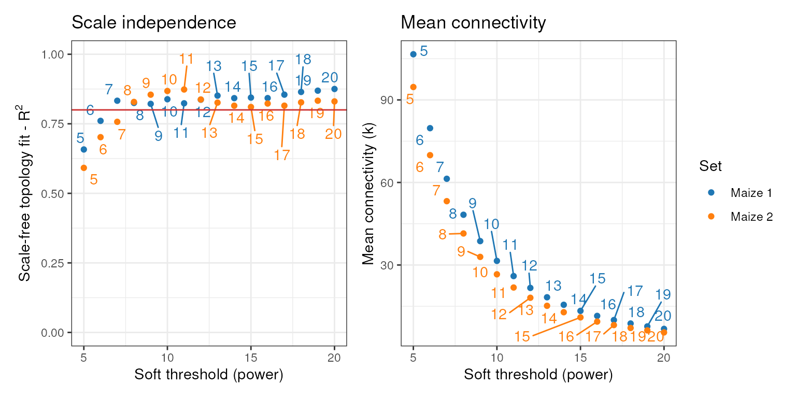

Network comparison: consensus modules and module preservation
Fabricio Almeida-Silva
Universidade Estadual do Norte Fluminense Darcy Ribeiro, RJ, BrazilThiago Motta Venancio
Universidade Estadual do Norte Fluminense Darcy Ribeiro, RJ, BrazilSource:
vignettes/vignette_03_network_comparison.Rmd
vignette_03_network_comparison.RmdInstallation
if(!requireNamespace('BiocManager', quietly = TRUE))
install.packages('BiocManager')
BiocManager::install("BioNERO")Introduction
Comparing different coexpression networks can reveal relevant
biological patterns. For instance, seeking for consensus
modules can identify coexpression modules that occur in all
data sets regardless of natural variation and, hence, are core players
of the studied phenotype. Additionally, module
preservation within and across species can reveal patterns of
conservation and divergence between transcriptomes. In this vignette, we
will explore consensus modules and module preservation analyses with
BioNERO. Although they seem similar, their goals are
opposite: while consensus modules identification focuses on the
commonalities, module preservation focuses on the divergences.
Data loading and description
We will use RNA-seq data of maize (Zea mays) and rice (Oryza sativa) obtained from Shin et al. (2020).
data(zma.se)
zma.se
## class: SummarizedExperiment
## dim: 10802 28
## metadata(0):
## assays(1): ''
## rownames(10802): ZeamMp030 ZeamMp044 ... Zm00001d054106 Zm00001d054107
## rowData names(0):
## colnames(28): SRX339756 SRX339757 ... SRX2792103 SRX2792104
## colData names(1): Tissue
data(osa.se)
osa.se
## class: SummarizedExperiment
## dim: 7647 27
## metadata(0):
## assays(1): ''
## rownames(7647): Os01g0100700 Os01g0100900 ... Os12g0641400 Os12g0641500
## rowData names(0):
## colnames(27): SRX831140 SRX831141 ... SRX263041 SRX1544234
## colData names(1): TissueAll BioNERO’s functions for consensus modules and module
preservation analyses require the expression data to be in a
list. Each element of the list can be a
SummarizedExperiment object (recommended) or an expression data frame
with genes in row names and samples in column names.
Consensus modules
The most common objective in consensus modules identification is to find core modules across different tissues or treatments for the same species. For instance, one can infer GCNs for different types of cancer in human tissues (say prostate and liver) and identify modules that occur in all sets, which are likely core components of cancer biology. Likewise, one can also identify consensus modules across samples from different geographical origins to find modules that are not affected by population structure or kinship.
Data preprocessing
Here, we will subset 22 random samples from the maize data twice and find consensus modules between the two sets.
# Preprocess data and keep top 2000 genes with highest variances
filt_zma <- exp_preprocess(zma.se, variance_filter = TRUE, n = 2000)
## Number of removed samples: 1
# Create different subsets by resampling data
zma_set1 <- filt_zma[, sample(colnames(filt_zma), size=22, replace=FALSE)]
zma_set2 <- filt_zma[, sample(colnames(filt_zma), size=22, replace=FALSE)]
colnames(zma_set1)
## [1] "SRX3804716" "SRX2792102" "SRX2527287" "SRX2792108" "SRX3804723"
## [6] "SRX2792107" "SRX2792103" "SRX2792104" "SRX3804715" "SRX339808"
## [11] "SRX339758" "SRX339756" "SRX339809" "SRX2792105" "SRX339757"
## [16] "SRX2641029" "SRX339762" "SRX2792110" "SRX339807" "SRX3804718"
## [21] "ERX2154032" "SRX339764"
colnames(zma_set2)
## [1] "SRX2792111" "SRX339756" "SRX3804715" "SRX2792108" "SRX2792103"
## [6] "SRX339762" "SRX339807" "ERX2154030" "SRX2792105" "SRX2792107"
## [11] "SRX2527287" "ERX2154032" "SRX2792104" "SRX2527288" "SRX339809"
## [16] "SRX3804718" "SRX3804716" "SRX2792109" "SRX3804723" "SRX2792102"
## [21] "SRX339808" "SRX339758"
# Create list
zma_list <- list(set1 = zma_set1, set2 = zma_set2)
length(zma_list)
## [1] 2Identification of consensus modules
As described in the first vignette, before inferring the GCNs, we
need to identify the optimal \(\beta\)
power that makes the network closer to a scale-free topology. We can do
that with consensus_SFT_fit().
cons_sft <- consensus_SFT_fit(zma_list, setLabels = c("Maize 1", "Maize 2"),
cor_method = "pearson")
## Power SFT.R.sq slope truncated.R.sq mean.k. median.k. max.k.
## 1 5 0.658 -0.650 0.656 107.00 90.50 304.0
## 2 6 0.761 -0.706 0.774 79.70 62.90 244.0
## 3 7 0.833 -0.757 0.863 61.30 45.10 200.0
## 4 8 0.825 -0.830 0.868 48.30 32.80 169.0
## 5 9 0.822 -0.916 0.887 38.70 24.50 145.0
## 6 10 0.838 -0.975 0.910 31.50 18.90 126.0
## 7 11 0.824 -1.040 0.914 26.00 15.00 111.0
## 8 12 0.837 -1.090 0.932 21.70 12.20 97.6
## 9 13 0.851 -1.130 0.944 18.30 10.10 86.6
## 10 14 0.842 -1.190 0.941 15.50 8.42 77.3
## 11 15 0.844 -1.230 0.947 13.30 7.17 69.4
## 12 16 0.842 -1.270 0.951 11.50 6.13 62.5
## 13 17 0.855 -1.300 0.962 9.99 5.24 56.5
## 14 18 0.864 -1.320 0.967 8.73 4.54 51.3
## 15 19 0.869 -1.330 0.970 7.67 3.92 46.7
## 16 20 0.875 -1.340 0.977 6.78 3.38 42.7
## Power SFT.R.sq slope truncated.R.sq mean.k. median.k. max.k.
## 1 5 0.592 -0.621 0.574 94.70 82.40 265.0
## 2 6 0.702 -0.666 0.710 69.90 56.80 209.0
## 3 7 0.757 -0.713 0.771 53.20 40.30 167.0
## 4 8 0.829 -0.729 0.853 41.50 29.50 136.0
## 5 9 0.855 -0.782 0.884 32.90 22.10 113.0
## 6 10 0.868 -0.826 0.911 26.60 17.20 96.6
## 7 11 0.873 -0.868 0.931 21.80 13.70 83.2
## 8 12 0.837 -0.943 0.914 18.10 11.30 73.0
## 9 13 0.826 -1.000 0.917 15.20 9.30 64.7
## 10 14 0.815 -1.070 0.917 12.80 7.73 57.6
## 11 15 0.810 -1.120 0.926 11.00 6.53 51.5
## 12 16 0.823 -1.150 0.943 9.42 5.45 46.3
## 13 17 0.815 -1.210 0.942 8.16 4.57 41.8
## 14 18 0.827 -1.240 0.954 7.11 3.92 37.8
## 15 19 0.833 -1.260 0.964 6.23 3.42 34.3
## 16 20 0.831 -1.280 0.965 5.49 2.99 31.2This function returns a list with the optimal powers and a summary
plot, exactly as SFT_fit() does.
powers <- cons_sft$power
powers
## set1 set2
## 7 8
cons_sft$plot
Now, we can infer GCNs and identify consensus modules across data sets.
consensus <- consensus_modules(zma_list, power = powers, cor_method = "pearson")
## ..connectivity..
## ..matrix multiplication (system BLAS)..
## ..normalization..
## ..done.
## ..connectivity..
## ..matrix multiplication (system BLAS)..
## ..normalization..
## ..done.
## ..done.
## multiSetMEs: Calculating module MEs.
## Working on set 1 ...
## Working on set 2 ...
names(consensus)
## [1] "consModules" "consMEs" "exprSize"
## [4] "sampleInfo" "genes_cmodules" "dendro_plot_objects"
head(consensus$genes_cmodules)
## Genes Cons_modules
## 1 ZeamMp030 royalblue
## 2 ZeamMp044 darkred
## 3 ZeamMp092 darkred
## 4 ZeamMp108 saddlebrown
## 5 ZeamMp116 darkred
## 6 ZeamMp158 saddlebrownFinally, we can correlate consensus module eigengenes to sample metadata (here, plant tissues).1
consensus_trait <- consensus_trait_cor(consensus, cor_method = "pearson")
head(consensus_trait)
## ME trait cor pvalue
## 1 MEblack endosperm -0.297224435 0.1815879
## 2 MEblack pollen 0.284525339 0.2021641
## 3 MEblack whole_seedling 0.007301901 0.9746086
## 4 MEblue endosperm -0.164695363 0.4687656
## 5 MEblue pollen 0.295979347 0.1835410
## 6 MEblue whole_seedling -0.016437184 0.9428769Users can also transpose the heatmap as in
module_trait_cor().
Module preservation
Module preservation is often used to study patterns of evolutionary conservation and divergence across transcriptomes, an approach named phylotranscriptomics. This way, one can investigate how evolution shaped the expression profiles for particular gene families across taxa.
Data preprocessing
To calculate module preservation statistics, gene IDs must be shared by the expression sets. For intraspecies comparisons, this is an easy task, as gene IDs are the same. However, for interspecies comparisons, users need to identify orthogroups between the different species and collapse the gene-level expression values to orthogroup-level expression values. This way, all expression sets will have common row names. We recommend identifying orthogroups with OrthoFinder (Emms and Kelly 2015), as it is simple to use and widely used.2 Here, we will compare maize and rice expression profiles. The orthogroups between these species were downloaded from the PLAZA 4.0 Monocots database (Van Bel et al. 2018).
data(og.zma.osa)
head(og.zma.osa)
## Family Species Gene
## 1548 ORTHO04M000001 osa Os01g0100700
## 1549 ORTHO04M000001 osa Os01g0100900
## 4824 ORTHO04M000001 zma Zm00001d009743
## 4854 ORTHO04M000001 zma Zm00001d020834
## 4874 ORTHO04M000001 zma Zm00001d026672
## 4921 ORTHO04M000001 zma Zm00001d039873As you can see, the orthogroup object for BioNERO must
be a data frame with orthogroups, species IDs and gene IDs,
respectively. Let’s collapse gene-level expression to orthogroup-level
with exp_genes2orthogroups(). By default, if there is more
than one gene in the same orthogroup for a given species, their
expression levels are summarized to the median. Users can also summarize
to the mean.
# Store SummarizedExperiment objects in a list
zma_osa_list <- list(osa = osa.se, zma = zma.se)
# Collapse gene-level expression to orthogroup-level
ortho_exp <- exp_genes2orthogroups(zma_osa_list, og.zma.osa, summarize = "mean")
# Inspect new expression data
ortho_exp$osa[1:5, 1:5]
## SRX831140 SRX831141 SRX831137 SRX831138 SRX831134
## ORTHO04M000001 6.909420 7.258330 94.20870 92.85195 123.01060
## ORTHO04M000002 9.203498 8.709974 66.45512 44.97913 33.86936
## ORTHO04M000003 9.417930 9.444861 42.57513 66.02237 55.37741
## ORTHO04M000004 9.019436 8.920091 96.22074 62.56506 109.32262
## ORTHO04M000005 40.845040 41.844234 52.33474 31.31474 22.42236
ortho_exp$zma[1:5, 1:5]
## SRX339756 SRX339757 SRX339758 SRX339762 SRX339763
## ORTHO04M000001 26.02510 15.07917 14.91571 13.82989 8.080476
## ORTHO04M000002 19.28281 13.94254 13.57854 12.96032 13.522525
## ORTHO04M000003 45.17294 48.63796 54.22404 42.12135 10.779117
## ORTHO04M000004 28.05475 38.53734 39.48070 27.13272 2.978207
## ORTHO04M000005 67.58868 34.87009 21.46280 12.79565 7.452068Now, we will preprocess both expression sets and keep only the top 1000 orthogroups with the highest variances for demonstration purposes.
Calculating module preservation statistics
Now that row names are comparable, we can infer GCNs for each set. We will do that iteratively with lapply.
# Calculate SFT power
power_ortho <- lapply(ortho_exp, SFT_fit, cor_method="pearson")
## Power SFT.R.sq slope truncated.R.sq mean.k. median.k. max.k.
## 1 3 0.15600 1.740 0.846 191.00 192.00 249.0
## 2 4 0.12400 1.080 0.844 129.00 130.00 178.0
## 3 5 0.10300 0.784 0.817 91.70 92.90 134.0
## 4 6 0.06140 0.528 0.818 67.80 68.90 106.0
## 5 7 0.04550 0.397 0.803 51.80 52.60 85.5
## 6 8 0.02660 0.234 0.840 40.70 40.80 70.7
## 7 9 0.00989 0.121 0.868 32.60 32.50 59.8
## 8 10 0.04090 -0.274 0.820 26.70 26.10 53.2
## 9 11 0.12200 -0.458 0.871 22.20 21.40 47.8
## 10 12 0.20600 -0.600 0.908 18.80 18.00 43.4
## 11 13 0.27900 -0.688 0.928 16.00 15.30 39.7
## 12 14 0.39900 -0.839 0.952 13.80 13.10 36.4
## 13 15 0.48600 -0.949 0.951 12.10 11.30 33.6
## 14 16 0.55500 -1.010 0.959 10.60 9.71 31.2
## 15 17 0.59600 -1.080 0.959 9.39 8.34 29.0
## 16 18 0.64700 -1.130 0.965 8.37 7.20 27.1
## 17 19 0.68300 -1.120 0.969 7.50 6.28 25.3
## 18 20 0.72300 -1.120 0.979 6.76 5.52 23.8
## No power reached R-squared cut-off, now choosing max R-squared based power
## Power SFT.R.sq slope truncated.R.sq mean.k. median.k. max.k.
## 1 3 0.6910 0.7290 0.6260 269.0 284.0 407.0
## 2 4 0.4540 0.3460 0.3270 199.0 209.0 329.0
## 3 5 0.0802 0.1070 -0.0486 153.0 158.0 273.0
## 4 6 0.0459 -0.0746 -0.0302 121.0 123.0 233.0
## 5 7 0.2620 -0.2140 0.3480 98.1 97.1 201.0
## 6 8 0.4070 -0.3270 0.4820 80.7 78.1 176.0
## 7 9 0.5030 -0.4180 0.5960 67.4 63.4 155.0
## 8 10 0.4930 -0.4950 0.5950 57.0 52.5 138.0
## 9 11 0.5730 -0.5520 0.6790 48.8 43.8 124.0
## 10 12 0.5770 -0.6090 0.6860 42.1 37.2 112.0
## 11 13 0.6560 -0.6500 0.7490 36.7 31.6 101.0
## 12 14 0.6740 -0.7010 0.7630 32.2 27.5 92.1
## 13 15 0.7240 -0.7330 0.7930 28.4 23.8 84.2
## 14 16 0.7800 -0.7460 0.8470 25.3 20.6 77.3
## 15 17 0.8330 -0.7540 0.9060 22.6 18.0 71.2
## 16 18 0.8560 -0.7740 0.9200 20.3 15.8 65.7
## 17 19 0.8690 -0.7870 0.9320 18.3 13.9 60.9
## 18 20 0.8810 -0.8120 0.9240 16.6 12.3 56.6
# Infer GCNs
gcns <- lapply(seq_along(power_ortho), function(n)
exp2gcn(ortho_exp[[n]], SFTpower = power_ortho[[n]]$power,
cor_method = "pearson")
)
## ..connectivity..
## ..matrix multiplication (system BLAS)..
## ..normalization..
## ..done.
## ..connectivity..
## ..matrix multiplication (system BLAS)..
## ..normalization..
## ..done.
length(gcns)
## [1] 2Initially, module preservation analyses were performed with WGCNA’s
algorithm (Langfelder and Horvath 2008).
However, the summary preservation statistics used by WGCNA rely on
parametric assumptions that are often not met. For this purpose, the
NetRep algorithm (Ritchie et al. 2016) is
more accurate than WGCNA, as it uses non-parametric permutation
analyses. Both algorithms are implemented in BioNERO for
comparison purposes, but we strongly recommend using
the NetRep algorithm. Module preservation analysis can be performed with
a single function: module_preservation().
# Using rice as reference and maize as test
pres <- module_preservation(ortho_exp,
ref_net = gcns[[1]],
test_net = gcns[[2]],
algorithm = "netrep")
## [2023-03-23 10:04:56 UTC] Validating user input...
## [2023-03-23 10:04:56 UTC] Checking matrices for problems...
## [2023-03-23 10:04:56 UTC] Input ok!
## [2023-03-23 10:04:57 UTC] Calculating preservation of network subsets from
## dataset "osa" in dataset "zma".
## [2023-03-23 10:04:57 UTC] Pre-computing network properties in dataset
## "osa"...
## [2023-03-23 10:04:57 UTC] Calculating observed test statistics...
## [2023-03-23 10:04:57 UTC] Generating null distributions from 1000
## permutations using 1 thread...
##
##
0% completed.
100% completed.
##
## [2023-03-23 10:04:58 UTC] Calculating P-values...
## [2023-03-23 10:04:59 UTC] Collating results...
## [2023-03-23 10:05:00 UTC] Done!
## 1 modules in osa were preserved in zma:
## NANone of the modules in rice were preserved in maize. This can be either due to the small number of orthogroups we have chosen or to the natural biological variation between species and sampled tissues. You can (and should) include more orthogroups in your analyses for a better view of transcriptional conservation between species.
Identifying singletons and duplicated genes
Finally, BioNERO can identify singletons and duplicated
genes with is_singleton(). This function returns logical
vectors indicating if each of the input genes is a singleton or not.
# Sample 50 random genes
genes <- sample(rownames(zma.se), size = 50)
is_singleton(genes, og.zma.osa)
## Zm00001d001841 Zm00001d002104 Zm00001d004006 Zm00001d005944 Zm00001d006390
## TRUE TRUE TRUE TRUE TRUE
## Zm00001d008725 Zm00001d008874 Zm00001d009669 Zm00001d011096 Zm00001d011507
## TRUE TRUE TRUE TRUE TRUE
## Zm00001d012816 Zm00001d014124 Zm00001d014890 Zm00001d015497 Zm00001d017085
## TRUE TRUE TRUE TRUE TRUE
## Zm00001d017275 Zm00001d017654 Zm00001d019718 Zm00001d020807 Zm00001d025222
## TRUE TRUE TRUE TRUE TRUE
## Zm00001d028731 Zm00001d030626 Zm00001d031041 Zm00001d031963 Zm00001d032111
## TRUE TRUE TRUE TRUE TRUE
## Zm00001d032186 Zm00001d032231 Zm00001d032671 Zm00001d032843 Zm00001d034004
## TRUE TRUE TRUE TRUE TRUE
## Zm00001d034713 Zm00001d036482 Zm00001d036651 Zm00001d037613 Zm00001d038937
## TRUE TRUE TRUE TRUE TRUE
## Zm00001d038960 Zm00001d039619 Zm00001d042213 Zm00001d043146 Zm00001d043914
## TRUE TRUE TRUE TRUE TRUE
## Zm00001d044251 Zm00001d044274 Zm00001d047303 Zm00001d048893 Zm00001d049399
## TRUE TRUE TRUE TRUE TRUE
## Zm00001d049617 Zm00001d052078 Zm00001d052888 Zm00001d053016 Zm00001d053962
## TRUE TRUE TRUE TRUE TRUESession info
This vignette was created under the following conditions:
## R version 4.2.1 (2022-06-23)
## Platform: x86_64-pc-linux-gnu (64-bit)
## Running under: Ubuntu 20.04.4 LTS
##
## Matrix products: default
## BLAS: /usr/lib/x86_64-linux-gnu/openblas-pthread/libblas.so.3
## LAPACK: /usr/lib/x86_64-linux-gnu/openblas-pthread/liblapack.so.3
##
## locale:
## [1] LC_CTYPE=en_US.UTF-8 LC_NUMERIC=C
## [3] LC_TIME=en_US.UTF-8 LC_COLLATE=en_US.UTF-8
## [5] LC_MONETARY=en_US.UTF-8 LC_MESSAGES=en_US.UTF-8
## [7] LC_PAPER=en_US.UTF-8 LC_NAME=C
## [9] LC_ADDRESS=C LC_TELEPHONE=C
## [11] LC_MEASUREMENT=en_US.UTF-8 LC_IDENTIFICATION=C
##
## attached base packages:
## [1] stats graphics grDevices utils datasets methods base
##
## other attached packages:
## [1] BioNERO_1.7.1 BiocStyle_2.24.0
##
## loaded via a namespace (and not attached):
## [1] backports_1.4.1 circlize_0.4.15
## [3] Hmisc_5.0-1 systemfonts_1.0.4
## [5] plyr_1.8.8 igraph_1.4.1
## [7] splines_4.2.1 GENIE3_1.18.0
## [9] BiocParallel_1.30.4 GenomeInfoDb_1.32.4
## [11] ggnetwork_0.5.12 ggplot2_3.4.1
## [13] sva_3.44.0 digest_0.6.31
## [15] foreach_1.5.2 htmltools_0.5.4
## [17] GO.db_3.15.0 fansi_1.0.4
## [19] magrittr_2.0.3 checkmate_2.1.0
## [21] memoise_2.0.1 cluster_2.1.4
## [23] doParallel_1.0.17 limma_3.52.4
## [25] annotate_1.74.0 ComplexHeatmap_2.12.1
## [27] fastcluster_1.2.3 Biostrings_2.64.1
## [29] matrixStats_0.63.0 pkgdown_2.0.7
## [31] colorspace_2.1-0 blob_1.2.4
## [33] ggrepel_0.9.3 textshaping_0.3.6
## [35] xfun_0.37 dplyr_1.1.0
## [37] crayon_1.5.2 RCurl_1.98-1.10
## [39] jsonlite_1.8.4 genefilter_1.78.0
## [41] impute_1.70.0 survival_3.5-5
## [43] iterators_1.0.14 glue_1.6.2
## [45] gtable_0.3.3 zlibbioc_1.42.0
## [47] XVector_0.36.0 GetoptLong_1.0.5
## [49] DelayedArray_0.22.0 shape_1.4.6
## [51] BiocGenerics_0.42.0 abind_1.4-5
## [53] scales_1.2.1 edgeR_3.38.4
## [55] DBI_1.1.3 Rcpp_1.0.10
## [57] xtable_1.8-4 htmlTable_2.4.1
## [59] clue_0.3-64 foreign_0.8-84
## [61] bit_4.0.5 preprocessCore_1.58.0
## [63] Formula_1.2-5 stats4_4.2.1
## [65] htmlwidgets_1.6.2 httr_1.4.5
## [67] RColorBrewer_1.1-3 farver_2.1.1
## [69] XML_3.99-0.14 pkgconfig_2.0.3
## [71] nnet_7.3-18 sass_0.4.5
## [73] locfit_1.5-9.7 utf8_1.2.3
## [75] dynamicTreeCut_1.63-1 labeling_0.4.2
## [77] tidyselect_1.2.0 rlang_1.1.0
## [79] reshape2_1.4.4 AnnotationDbi_1.58.0
## [81] munsell_0.5.0 tools_4.2.1
## [83] cachem_1.0.7 cli_3.6.0
## [85] generics_0.1.3 RSQLite_2.3.0
## [87] statnet.common_4.8.0 evaluate_0.20
## [89] stringr_1.5.0 fastmap_1.1.1
## [91] yaml_2.3.7 ragg_1.2.5
## [93] RhpcBLASctl_0.23-42 knitr_1.42
## [95] bit64_4.0.5 fs_1.6.1
## [97] purrr_1.0.1 KEGGREST_1.36.3
## [99] nlme_3.1-162 compiler_4.2.1
## [101] rstudioapi_0.14 png_0.1-8
## [103] minet_3.54.0 tibble_3.2.1
## [105] statmod_1.5.0 bslib_0.4.2
## [107] stringi_1.7.12 highr_0.10
## [109] desc_1.4.2 lattice_0.20-45
## [111] Matrix_1.5-3 vctrs_0.6.0
## [113] pillar_1.8.1 lifecycle_1.0.3
## [115] networkD3_0.4 BiocManager_1.30.20
## [117] jquerylib_0.1.4 GlobalOptions_0.1.2
## [119] data.table_1.14.8 bitops_1.0-7
## [121] patchwork_1.1.2 GenomicRanges_1.48.0
## [123] R6_2.5.1 bookdown_0.33
## [125] network_1.18.1 gridExtra_2.3
## [127] IRanges_2.30.1 codetools_0.2-19
## [129] SummarizedExperiment_1.26.1 rprojroot_2.0.3
## [131] rjson_0.2.21 withr_2.5.0
## [133] S4Vectors_0.34.0 GenomeInfoDbData_1.2.8
## [135] intergraph_2.0-2 mgcv_1.8-42
## [137] parallel_4.2.1 grid_4.2.1
## [139] rpart_4.1.19 NetRep_1.2.6
## [141] coda_0.19-4 rmarkdown_2.20
## [143] MatrixGenerics_1.8.1 ggnewscale_0.4.8
## [145] Biobase_2.56.0 WGCNA_1.72-1
## [147] base64enc_0.1-3